개요
| 일시 | 2026년 11월 14일(토) 09:00~16:00 (습지 탐조 10:30~14:30) |
|---|---|
| 장소 | 서귀포시 성산읍 오조리 연안습지보호지역 일대, 오조리종합복지회관 |
| 주최 | 오조리마을회 · (사)제주생태관광협회 |
| 사업 | 2026 해양보호구역 인식증진 교육 및 홍보사업 |
| 규모 | 35개 팀 79명 신청 (어린이·가족 중심) |
| 동행 | 오조리 마을 어르신 해설사, 탐조 가이드 |
'오고생이'는 '고스란히, 있는 그대로'라는 뜻의 제주어에 제주로 오는 새(생이)라는 뜻을 함께 담은 이름입니다. 오조리 습지를 지금 모습 그대로 지켜 미래세대에 물려주자는 약속이기도 합니다. 오조리 연안습지는 제주의 첫 연안습지보호지역입니다.
진행
- 개회와 '오고생이'의 뜻 — 고제량 (사)제주생태관광협회 공동대표
- 미션 안내, 가이드 소개, 우비 나눔, 팀별 출발
- 오전 습지 탐조 — 마을·농경지·둑방 코스와 내수면 코스, 해설사·가이드 동행, 야장(탐조기록지) 기록
- 점심과 참가자 인터뷰
- 오후 탐조, 조류 퀴즈, 심사
- 대회 총평(김완병 제주학연구센터장), 시상, '오·조·리·습·지' 5행시, 단체사진
결과
- 1위에코플라이어스 1팀표선중학교 탐조 동아리 · 47종
- 2위연우네41종 (일부 종은 새소리로 동정)
- 3위엄자매 팀41종
심사: 김완병 제주학연구센터장 등 전문가 3명
현장 이야기
- "물수리랑 저어새 봤어요." "저어새는 주둥이가 길었어요."참가 어린이
- "새 보면 날리지 마시고, 플라스틱 쓰지 마시고, 대회 많이 참여해 주세요."엄자매 팀
- 비를 맞는 사람과 새가 하나가 되는 경험이 비 오는 날 탐조의 묘미입니다.조영균 심사위원
- 새가 안전한 곳은 사람이 살아가는 데도 안전한 곳입니다.고기봉 오조리 전 이장
- 많이 걷고, 많이 보고, 많이 기록하는 것이 새들의 삶터를 지키는 실천입니다.고제량 (사)제주생태관광협회 공동대표
사진
사진을 누르면 크게 보이고, '원본'을 누르면 내려받습니다. 공개를 원하지 않는 사진은 문의로 알려 주세요.
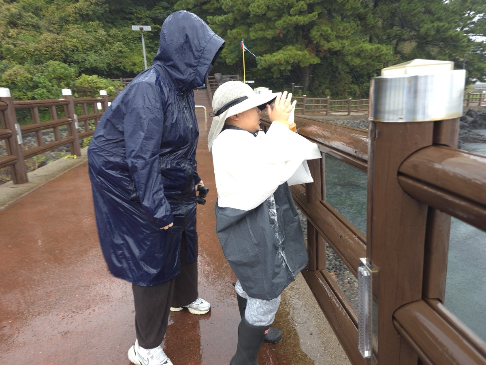

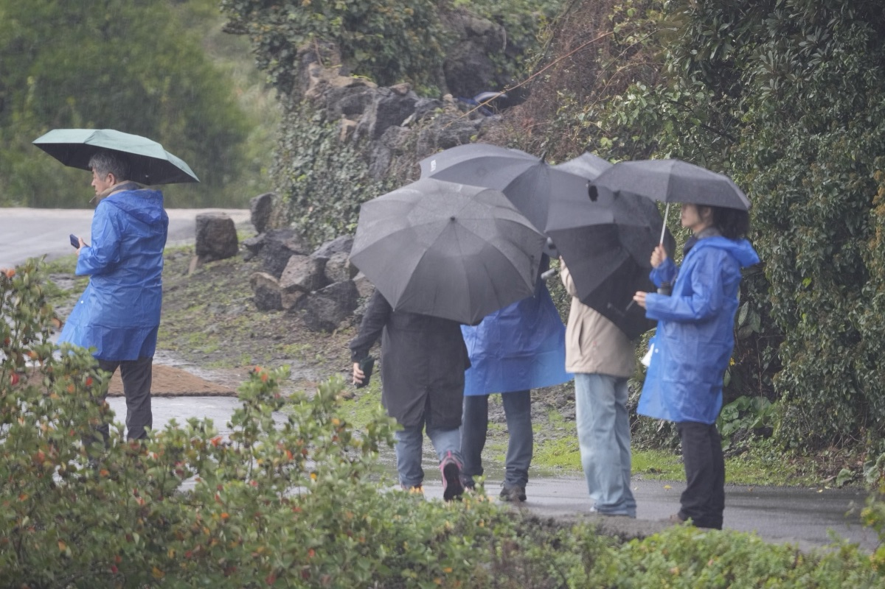

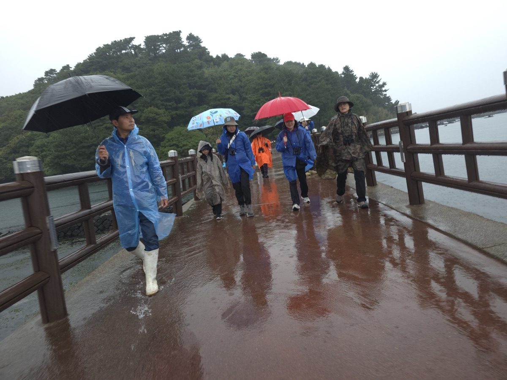

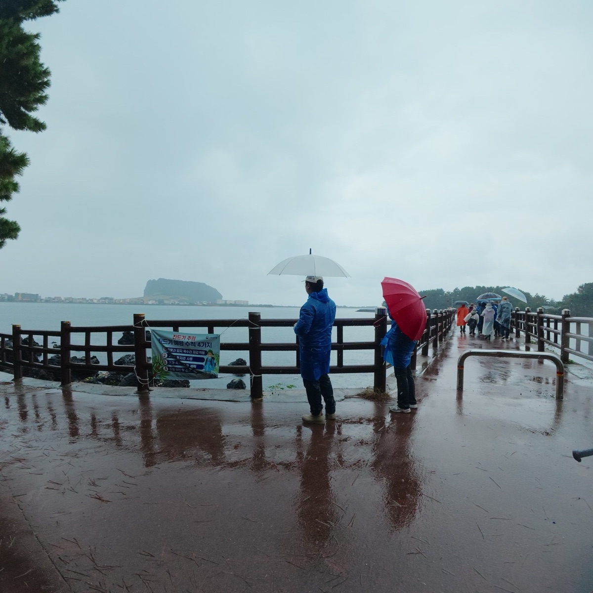

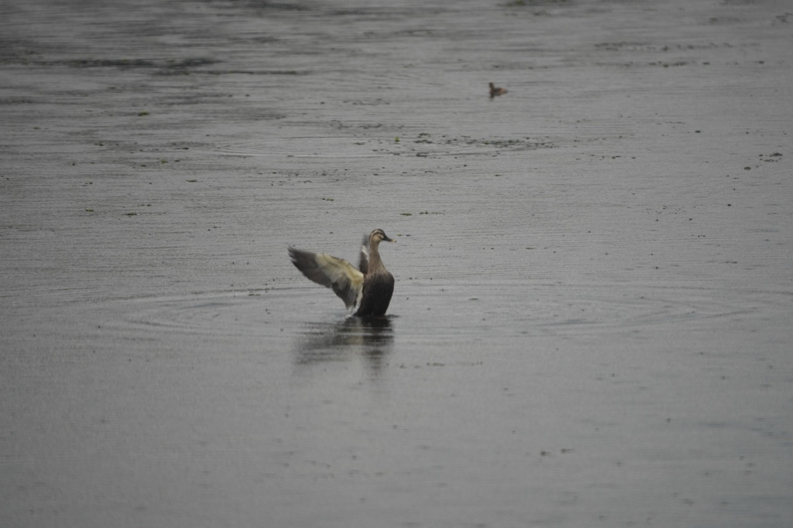

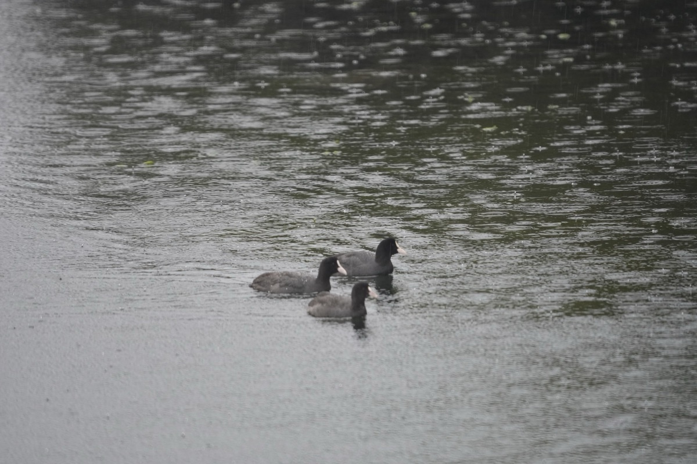

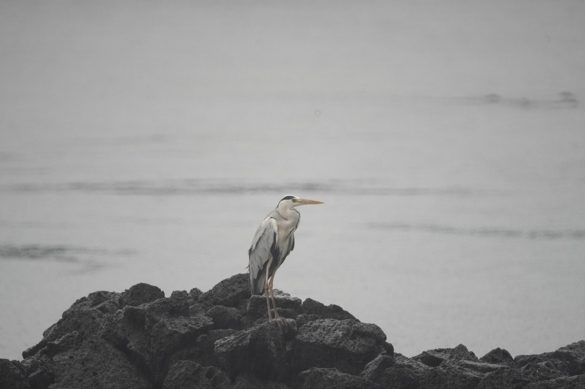

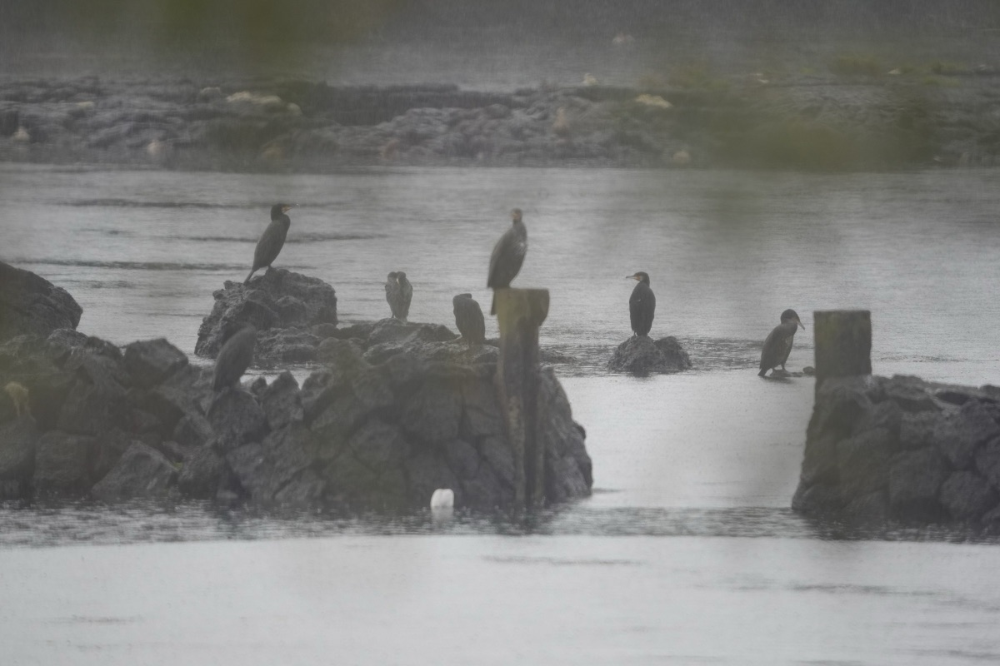

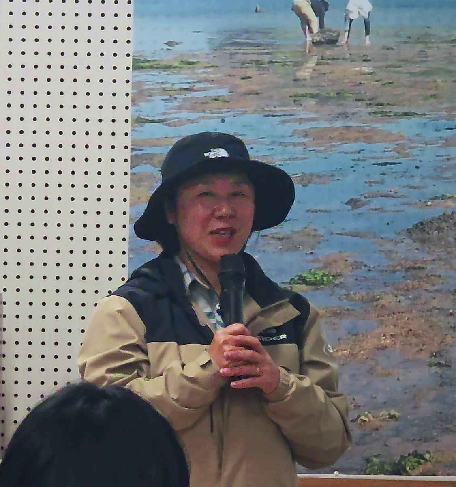

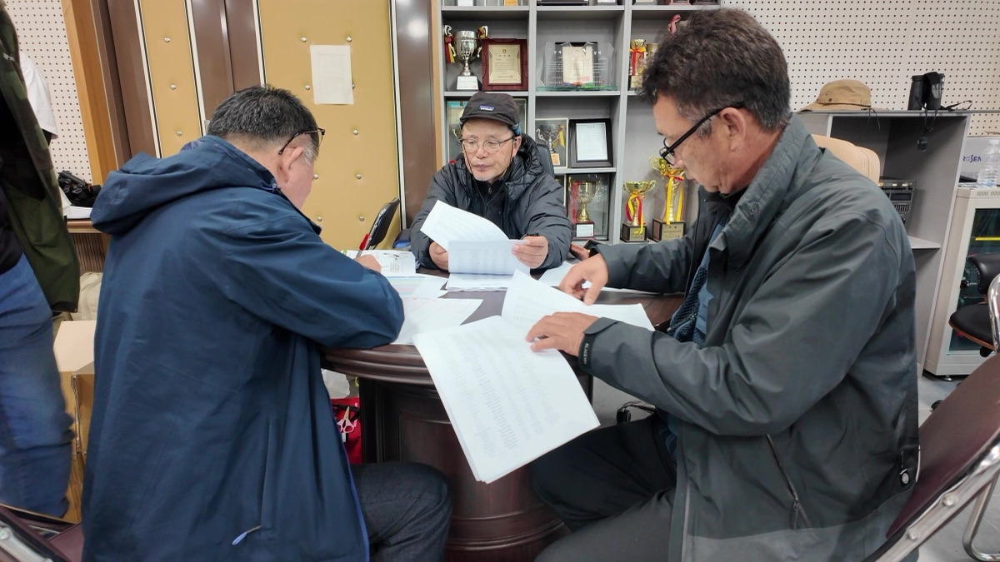

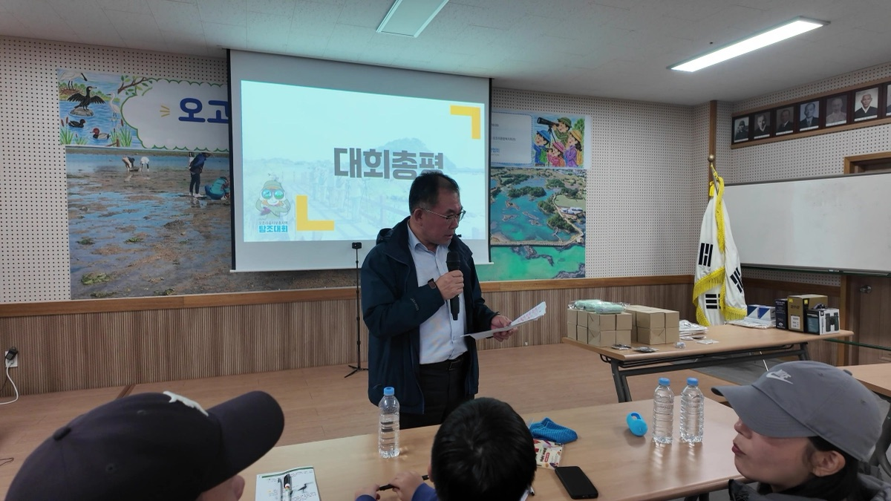

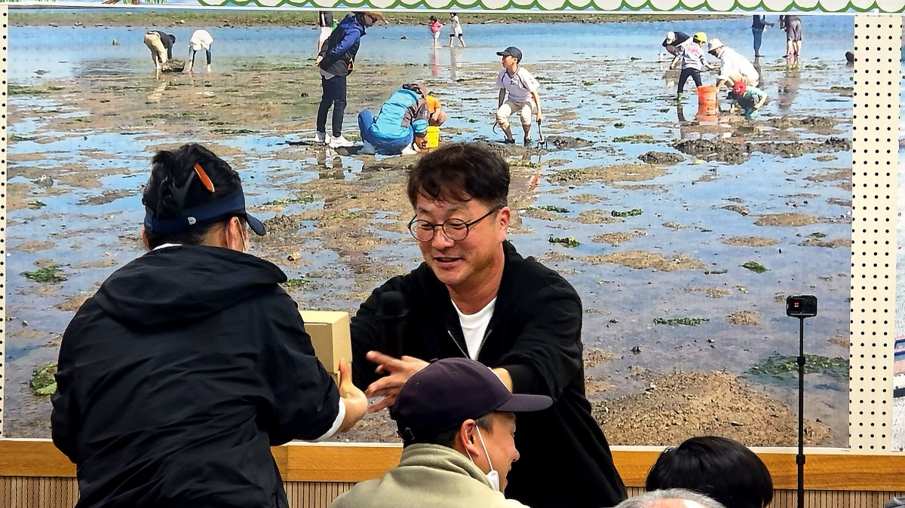

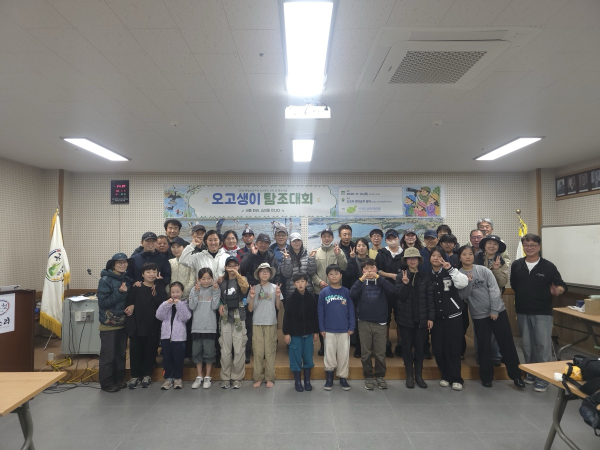

출처
- 사진: 현장 촬영 및 현장 영상 캡처
- 영상 속 새 자료 사진: 2026 오조리 탐조대회 미니도감 — 여상경(에코허브물새알 대표) 제공 (저어새, 노랑부리저어새, 물수리, 매, 섬휘파람새) · 잿빛개구리매 — Aleksandr Chegodaev, CC0 1.0, Wikimedia Commons
- 제주투데이 2026. 11. 16. 빗속 오조리 습지에서 만난 철새들 … ‘제2회 오고생이 탐조대회’
- 제민일보 2026. 11. 16. 빗속에서 철새 찾아 삼만리…오조리 탐조대회 성료
- 뉴스N제주 2026. 11. 16. 기사 보기
- 정책브리핑 2024. 1. 10. 오조리 갯벌 습지보호지역 지정 기사 보기
- 행사 안내 jejuecotourism.com/events/2026-birding/